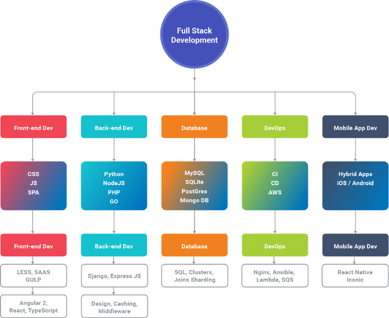

¿Que es el backEnd?
Un desarrollador backend , se encarga de diseñar la lógica y las soluciones para que todas las acciones solicitadas en una página web sean ejecutadas de manera correcta. ... Por lo tanto, un desarrollador backend es responsable de la programación del sitio en todos sus componentes.
¿Cuales son los roles del BackEnd?
1.-Backend developer
2.-Administrador de la base de datos
3.-Administrador de sistemas
¿Cual es la función de cada rol?
1.- Hablamos del programador como tal y se encarga de la lógica del negocio, los códigos de programación del lado del servidor y crea las APIs que serán consumidas por el frontend. Es importante que este también se encargue de la seguridad, es decir, limpiar los formularios, verificar que todos tengan los permisos adecuados y parecidos.
2.- Es un experto en SQL con lo cual diseña, mejora, normaliza, administra, optimiza y mantiene la base de datos. Estos profesionales son muy demandados gracias a su “capacidad de moderar grandes cantidades de información y porque no solo se quedan del lado del desarrollo backend, sino que pueden moverse al Big Data y al machine learning con relativa facilidad”, explicó Felipe.
3.- Como su nombre lo indica, se encarga de instalar y administrar los sistemas operativos donde se alojan la aplicación o web. Debe tener un amplio conocimiento del sistema donde trabajar y manejar conceptos de networking, cloud computing y de contenedores como token.
¿Cuales son los principales lenguajes de programación y frameworks del backend?
PHP. LUA+ OpenResty. Python. Asp.NET. Java + OpenGSE. Ruby + Ruby on Rails. Javascript + NodeJS + ExpressJS.
¿Que es un Stack? Ejemplos de Stack?
Un web stack, también denominado web application stack o conjunto de soluciones (solution stack), define a un paquete de software necesario para el desarrollo de páginas y aplicaciones web. ... La combinación más conocida, sin embargo, es la pila open source LAMP, resultado de la unión de Linux, Apache, MySQL y PHP.
EJEMPLOS
1.-WISA
